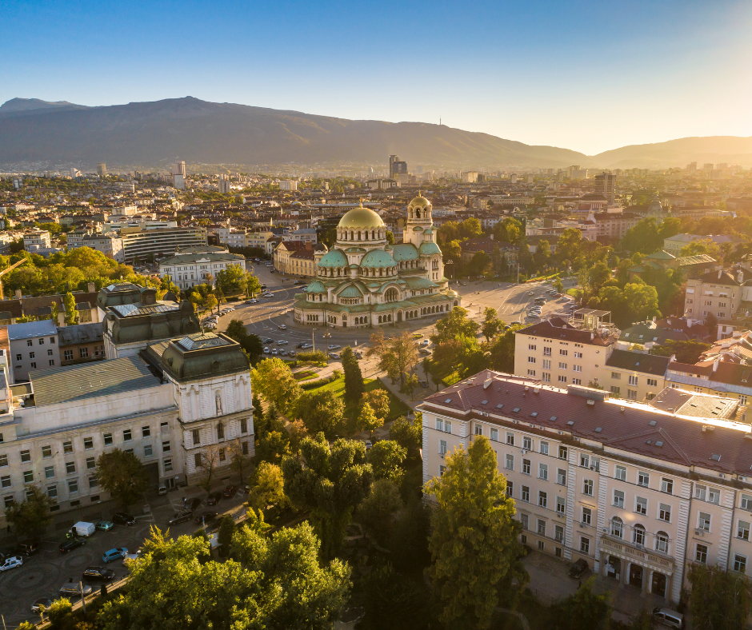
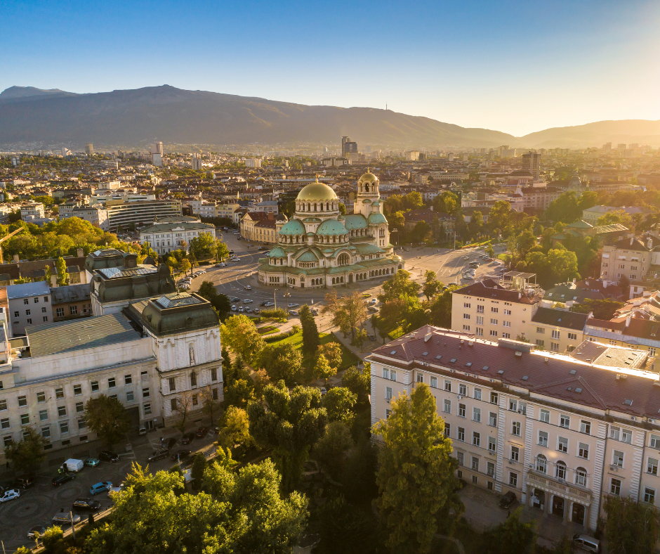

Singapore

Singapore is a country located at the southern end of Malaysia. Despite the fact that Singapore is only 281.3 square miles and has a population of approximately 5.54 million, it has a thriving economy and is a strong player in the global market
Singapore is famous for its city skyline, with a few landmarks such as the Marina Bay Sands Resort, Raffles Hotel, and the Esplanade. Additionally, Singapore has the highest rated airport in the world, with Changi Airport featuring many retail and dining options.
Geographical Location: North America
Photo Gallery

Hawker centres are a staple in singaporeans food culture. affordable food stalls run by elderly experienced cooks. You can find anything from any of the 4 main cultures in singapore (chinese, malay, indian and “western”)

Changi airport is consistently ranked as the best airport in the world, for its cleanliness, efficiency and shopping/dining options. It’s main feat is Jewel’s water feature.

These big gardens were built a few years ago and emphasise the idea that singapore is a “Garden City”. The trees light up at night and are a common location for photoshoots, night walks and weddings.

Pulau Ubin is a nature reserve island off the coast of Singapore. It is a popular destination for a day filled with hiking, kayaking among mangroves, biking on nature trails, and observing wildlife like crocodiles, monkeys and wild boar.

Sentosa is an island off the south coast of singapore. It hosts Universal Studios, casinos and beach resorts. It is Singapore’s vacation island. There are lots of white sandy beaches, hikes, beachfront restaurants and other attractions that are visited by tourists and locals alike
Apostle Islands


Geographical Location: North America
The Apostle Islands are a collection of 22 islands in Lake Superior located in the northern region of Wisconsin, USA. Originally inhabited by the Ojibwe (Chippewa) people, the islands contain over hundreds of years worth of rich Native American history. In 1970, 21 of the islands and the surrounding waters were designated as the Apostle Islands National Lakeshore, a protected area managed by the National Park Service. Lastly, the islands are home to a diverse range of wildlife, including, white-tailed deer, black bears and various bird species.
There are six lighthouses spread across the islands, making it one of the largest collections of lighthouses in the United States. When the island receives visitors it is viewed as a popular destination for outdoor activities such as kayaking, sailing, hiking and camping. In addition, many people enjoy other activities such as berry picking. Camping is also allowed in 19 of the 21 islands to date.
Photo Gallery


Yellowstone


Geographical Location: North America
Yellowstone is the first national park in the United States. It covers over 2.2 million acres, and provides an opportunity to see wildlife and explore geothermal areas. In fact, Yellowstone contains about half the world's active geysers.
These unique opportunities also bring out a lot of bad decisions among the tourists. Every year visitors injure themselves or the wildlife by getting close to the animals. You can see examples of people making bad decisions by visiting Yellowstone National Park: Invasion of the Idiots, Tourons of Yellowstone, or Cowboy State Daily.
Photo Gallery


Sofia, Bulgaria
 

Geographical Location: Europe
Sofia is the capital city of Bulgaria, a country located in Eastern Europe. It is part of the European Union and the primary language spoken is Bulgarian. The city’s population is around 1.3 million. In addition to its urban structures, Sofia also contains a mountain peak called “Vitosha”
Vitosha is located 30 minutes from the capital’s center, and can be reached by foot, car, and by lift. The peak has an elevation of 7,520 feet and during the summer months the average temperature is around 64 degrees fahrenheit. This makes it a great sight for any type of traveler who seeks the outdoors.
Photo Gallery